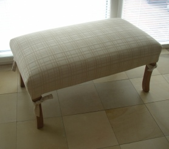

"SPRING
WINE "
Bezug: Hochwertiger Gobelinstoff. Rank-Blätter in blau, grün
und rose` Tönen auf beige/grau-farbenem Hintergrund.
Beintyp: Shaker
Beinfarbe: Kirschbaum
Größe: 90 x 50 x 40 cm
Preis € 349
mit
Husse BERLIN
